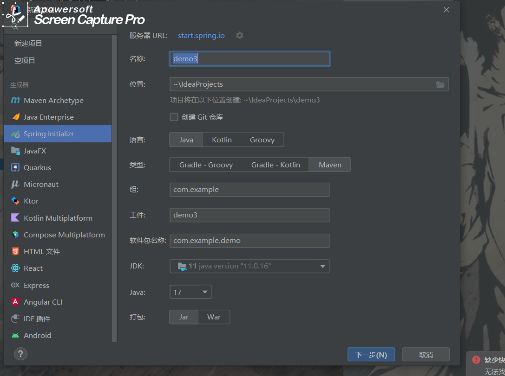
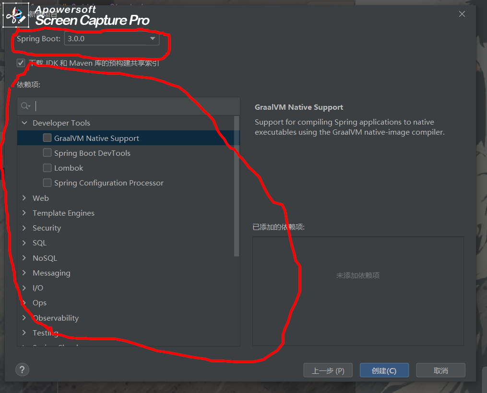
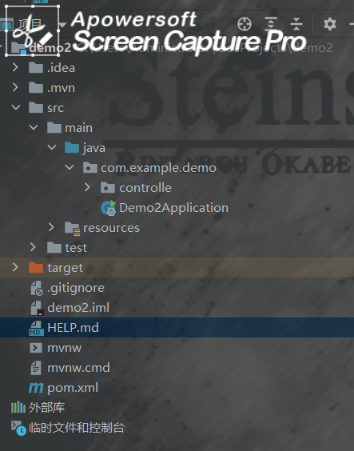
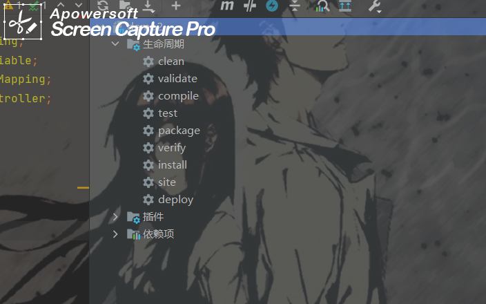
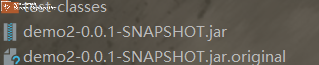
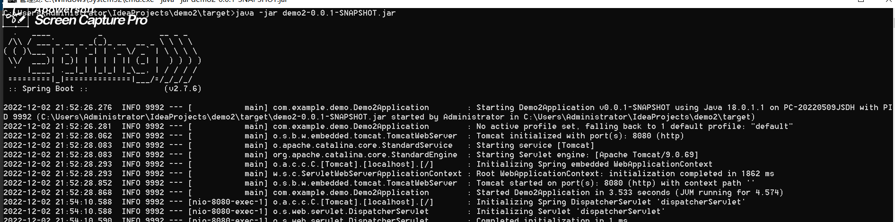
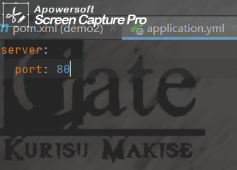
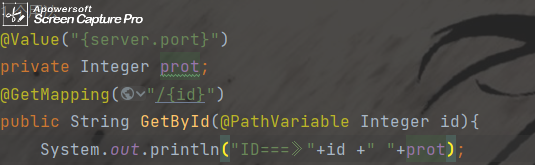
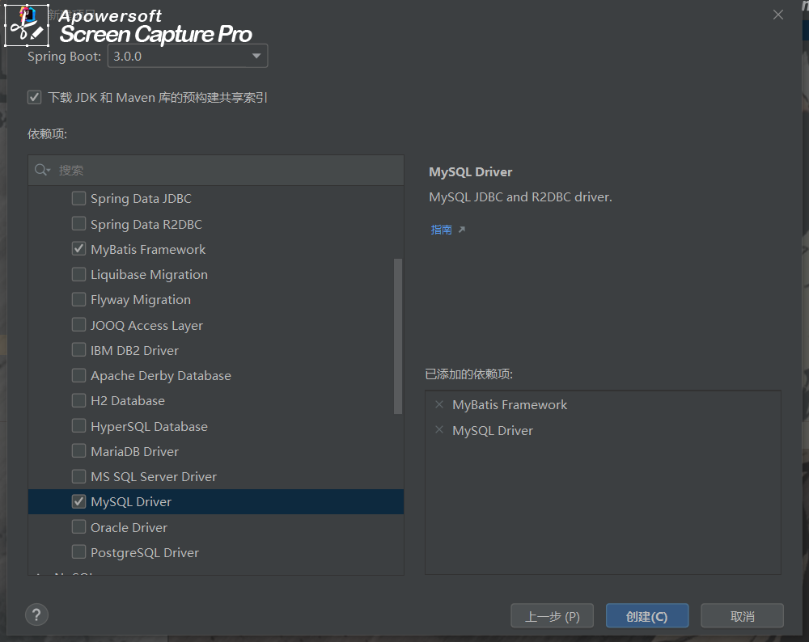
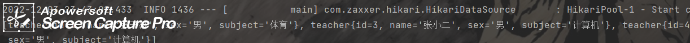

SpringBoot
官网
简介
Spring Boot是由Pivotal团队提供的全新框架，其设计目的是用来简化新Spring应用的初始搭建以及开发过程。
该框架使用了特定的方式来进行配置，从而使开发人员不再需要定义样板化的配置。
通过这种方式，Spring Boot致力于在蓬勃发展的快速应用开发领域(rapid application development)成为领导者。
百度百科：）
idea创建springboot项目

jdk需要保持一致不然会报错，因为根本上还是从spring的官网上下载结构，所以必须联网。

版本选的是2.几的不知道为什么选3.0会报错jdk不一致
大概是这个样子

Applocation 就是它的启动类了右键选择运行就可以运行springboot程序
SpringBoot 的POM文件
1
2
3
4
5
6
7
8
9
10
11
12
13
14
15
16
17
18
19
20
21
22
23
24
25
26
27
28
29
30
31
32
33
34
35
36
37
38
39
40
41
42
| <?xml version="1.0" encoding="UTF-8"?>
<project xmlns="http://maven.apache.org/POM/4.0.0" xmlns:xsi="http://www.w3.org/2001/XMLSchema-instance"
xsi:schemaLocation="http://maven.apache.org/POM/4.0.0 https://maven.apache.org/xsd/maven-4.0.0.xsd">
<modelVersion>4.0.0</modelVersion>
<parent>
<groupId>org.springframework.boot</groupId>
<artifactId>spring-boot-starter-parent</artifactId>
<version>2.7.6</version>
<relativePath/>
</parent>
<groupId>com.example</groupId>
<artifactId>demo2</artifactId>
<version>0.0.1-SNAPSHOT</version>
<name>demo2</name>
<description>demo2</description>
<properties>
<java.version>11</java.version>
</properties>
<dependencies>
<dependency>
<groupId>org.springframework.boot</groupId>
<artifactId>spring-boot-starter-web</artifactId>
</dependency>
<dependency>
<groupId>org.springframework.boot</groupId>
<artifactId>spring-boot-starter-test</artifactId>
<scope>test</scope>
</dependency>
</dependencies>
<build>
<plugins>
<plugin>
<groupId>org.springframework.boot</groupId>
<artifactId>spring-boot-maven-plugin</artifactId>
</plugin>
</plugins>
</build>
</project>
|
springboot 的快速启动

将项目打包package 生成JAR包

用小黑窗进去输入 java -jar |jar包的名字| 这里输入名字的第一个字母按``tab`键可以补全
运行

springboot 依赖
springboot 的依赖继承了许多比如这个
1
2
3
4
| <dependency>
<groupId>org.springframework.boot</groupId>
<artifactId>spring-boot-starter-web</artifactId>
</dependency>
|
点进去有许多，如果要换服务器（默认是汤姆猫）
可以先排除它
1
2
3
4
5
6
7
8
9
10
11
| <dependency>
<groupId>org.springframework.boot</groupId>
<artifactId>spring-boot-starter-web</artifactId>
<exclusions>
<exclusion>
<groupId>orgspringframeworkboot<groupId>
<artifactId>spring-boot-starter-tomcat</artifactId>
</exclusion>
</exclusions>
</dependency>
|
再在下面添加自己想要的坐标就好
1
2
3
4
| <dependency>
<groupId></groupId>
<artifactId></artifactId>
</dependency>
|
配置文件
- application.properties文件配置
server.port=80
- yml文件配置(在SpringBoot中所有配置文件都用
application命名)

优先级
properties > yml > yaml
yml格式配置文件数据取用
- 直接用
${xxx}

- 用environment
1
2
3
| @Autowired
private Environment environment;
|
1
| System.out.println("ID===》"+id +" "+prot + environment.getProperty("server.port"));
|
- 定义一个参数实体类，将配置参数设置为类声明
1
2
| @Comonent
@ConfigurationProperties(prefix = "一级参数名")
|
多环境配置
yaml配置
1
2
3
4
5
6
7
8
9
10
11
12
13
14
15
16
| spring:
profiles:
active: dev
---
spring:
profile: dev
server:
prot: 80
---
spring:
profile: pro
server:
prot: 81
|
- properties文件
需要创建多个application-{环境名}.properties文件
，并在application.properties文件中声明spring.profiles.active = {环境名}
如果文件编码记得去设置里该编辑器-文件编码
命令行多环境启动
打包后用cmd
java -jar {jar包名} --spring.profiles.active = {环境名}
可以该参数 比如 server.prot = 80
优先级===>
spring官网
Maven + boot 环境控制
在pom中设置
1
2
3
4
5
6
7
8
| <profiles>
<profile>
<id>sda</id>
<properties>
<profile.active>pro</profile.active>
</properties>
</profile>
</profiles>
|
然后在yml文件中使用
1
2
3
| spring:
profiles:
active: ${pro}
|
记得在pom中加上插件不然会报错不能解析${}
1
2
3
4
5
6
7
8
| <plugin>
<groupId>org.apache.maven.plugins</groupId>
<artifactId>maven-resources-plugin</artifactId>
<version>3.0.0</version>
<configuration>
<useDefaultDelimiters>true<useDefaultDelimiters>
</configuration>
</plugin>
|
springboot 配置文件分类
file : config/application.yml
file : application.yml
classpath : config/application.yml
classpath : application.yml
优先级由高到低，一二级用于打包之后配置通用属性
SpringBoot 整合 SSM Mybatis
由于boot中自带spring和springmvc 所以只用整合mybatis就行
先创建一个新项目，添加mybatis起步依赖

创建实体类
1
2
3
4
5
6
7
8
9
10
11
12
13
14
15
16
17
18
19
20
21
22
23
24
25
26
27
28
29
30
31
32
33
34
35
36
37
38
39
40
41
42
43
44
45
46
47
48
49
50
51
52
53
54
55
| package com.example.boot_mybatis.dmain;
public class teacher {
private Integer id;
private String name;
private String sex;
private String subject;
@Override
public String toString() {
return "teacher{" +
"id=" + id +
", name='" + name + '\'' +
", sex='" + sex + '\'' +
", subject='" + subject + '\'' +
'}';
}
public Integer getId() {
return id;
}
public void setId(Integer id) {
this.id = id;
}
public String getName() {
return name;
}
public void setName(String name) {
this.name = name;
}
public String getSex() {
return sex;
}
public void setSex(String sex) {
this.sex = sex;
}
public String getSubject() {
return subject;
}
public void setSubject(String subject) {
this.subject = subject;
}
}
|
持久层映射
1
2
3
4
5
6
7
8
9
10
11
12
13
14
15
| package com.example.boot_mybatis.Dao;
import com.example.boot_mybatis.dmain.teacher;
import org.apache.ibatis.annotations.Insert;
@Mapper
public interface teacherDao {
@Insert("insert into teacher(`name`,`sex`,`subject`) values(#{name},#{sex},#{subject})")
public void save(teacher teacher);
}
|
将配置文件后缀改为yml application.yml 写入配置信息
1
2
3
4
5
6
7
| spring:
datasource:
driver-class-name: com.mysql.jdbc.Driver
url: jdbc:mysql://localhost:3306/School?useSSL=false
username: 用户
password: 密码
|
Ok,测试
1
2
3
4
5
6
7
8
9
10
| @SpringBootTest
class BootMybatisApplicationTests {
@Autowired
private com.example.boot_mybatis.Dao.teacherDao teacherDao;
@Test
void contextLoads() {
System.out.println( teacherDao.Select());
}
}
|
通过

如果需要改动springboot版本记得在数据库连接后加上时区
jdbc:mysql://localhost:3306/School?useSSL=false&serverTimezone=UTC